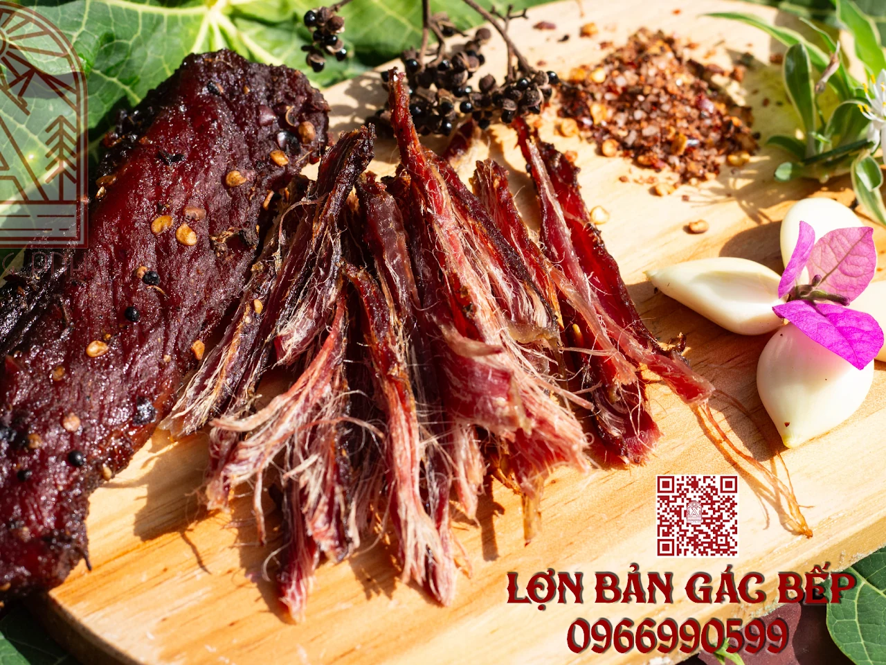
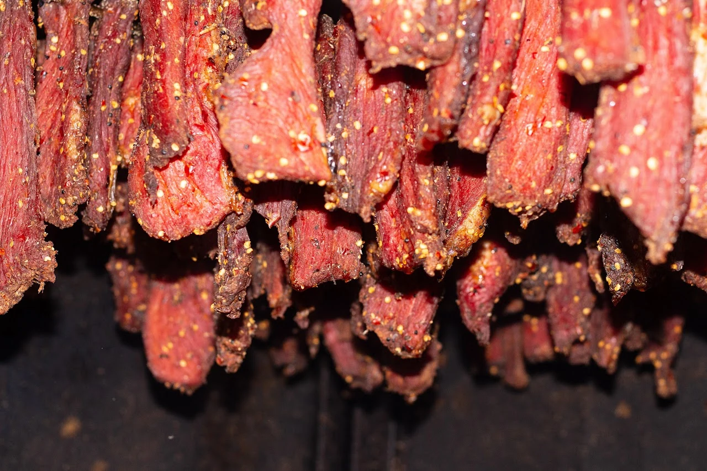
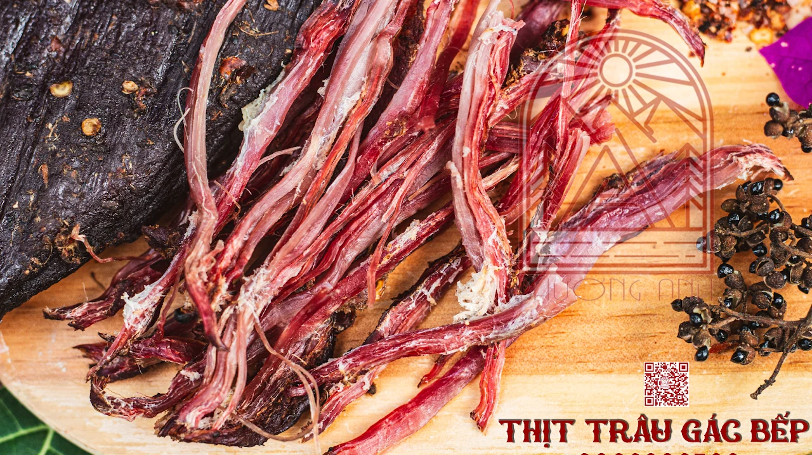
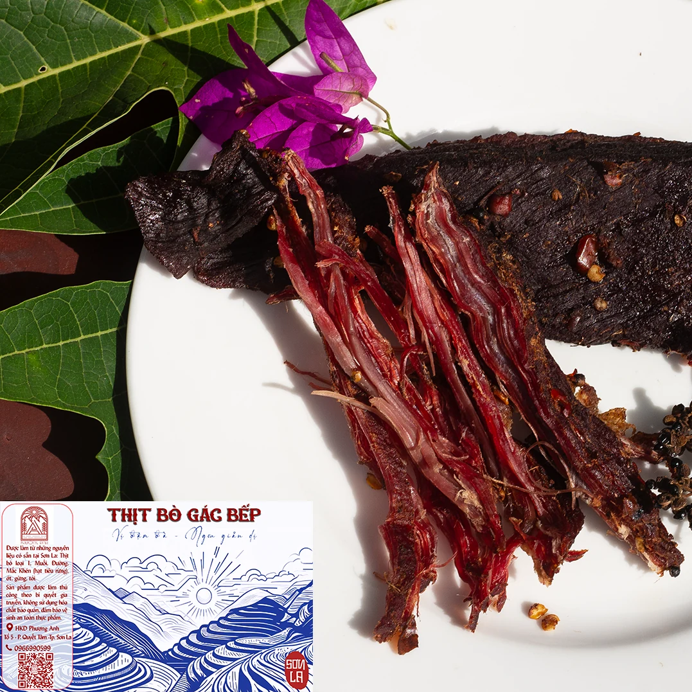

01 · LỢN BẢN
Thịt lợn gác bếp
Thịt từ giống lợn bản vùng Tây Bắc, được chế biến và hun khói ngay khi rời lò mổ.
Hỏi về sản phẩm ↗PHƯƠNG ANH FOOD · SƠN LA
Hương khói bếp,
vị ngon quê nhà.
Thịt được tẩm ướp và chế biến ngay sau khi mổ bằng phương pháp thủ công truyền thống, giữ hương vị thơm ngon, đậm đà.

SẢN PHẨM GÁC BẾP
Các sản phẩm thịt gác bếp của Phương Anh Sơn La.

01 · LỢN BẢN
Thịt từ giống lợn bản vùng Tây Bắc, được chế biến và hun khói ngay khi rời lò mổ.
Hỏi về sản phẩm ↗
02 · THỊT TRÂU
Một trong các sản phẩm gác bếp của Phương Anh. Liên hệ để được tư vấn quy cách và giá bán.
Hỏi về sản phẩm ↗
03 · THỊT BÒ
Thêm một lựa chọn trong dòng thịt gác bếp Phương Anh. Liên hệ để được tư vấn sản phẩm.
Hỏi về sản phẩm ↗KẾT NỐI VỚI PHƯƠNG ANH
Liên hệ để được tư vấn sản phẩm và giá bán.
Nhắn tin Zalo ↗